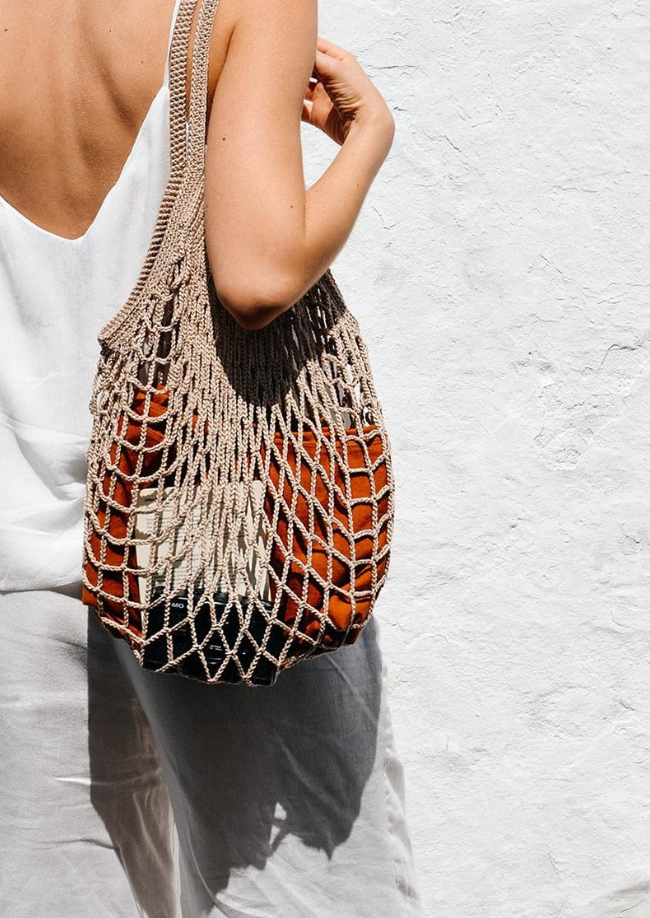

| Trends |
|---|
Woher kommt der Trend? Ob im Einkaufszentrum oder im öffentlichen Verkehr, man sieht sie beinahe überall.Der Trend der wiederverwendbaren Taschen kommt definitiv mit dem Umwelt- bewusstsein und der Klimakriese. Immer mehr Leute sind bereit sich den Heraus- forderungen des Klimaschutzes zu stellen. Vor allem sind es die Jugendlichen und jungen Erwachsenen, welche sich um ihre Zukunft ihres Planeten sorgen. Aus diesem Grund kommt der Jutebeutel als preiswerte Alternative zum Plastiksack, welchen wir nur noch gegen Geld in Supermärkten, wie den Coop oder die Migros, erhalten, sehr gelegen. Ausserdem sind sie leicht zu personalisieren und können oftmals mit den verrücktesten Aufdrucken gekauft werden. |
Ähnlicher Trend Schon in den 1980er Jahren erlebte der Turnbeutel seine modische Revolution,jedoch hielt dieser Trend nicht lange an und die Beutel wurden wieder zum Verstauen der Sportsachen gebraucht. Um das Jahr 2010 kam der Trend zurück, da die Mode sportlicher geworden ist, ein Beispiel dafür sind Sneaker und Jogging- hosen. Den «Jute-Look» bewahrte der Turnbeutel während diesen Trends nicht immer, doch man findet ihn noch heute in den knalligsten Farben und mit verschiedensten Motiven. |
Nachfolger Man sieht sie immer häufiger in den Posts der Influencer auf Instagram: DieNet Bags. Eigentlich sind es nur Einkaufsnetze aus Baumwolle. Zwar unterstützen noch nicht alle diesen Trend, aber das wird sich wahrscheinlich in naher Zukunft ändern, weil die Tasche viel Platz bietet, auch wenn man dabei auf kleinere Sachen verzichten müsste, weil es eigentlich nur ein Jutebeutel mit Löchern ist. Natürlich gibt es wildere Varianten aus Leder oder Perlen, jedoch geht es bei allen um das Gleiche; es ist eine tolle Alternative zur Plastiktasche. |
 |